学习视频
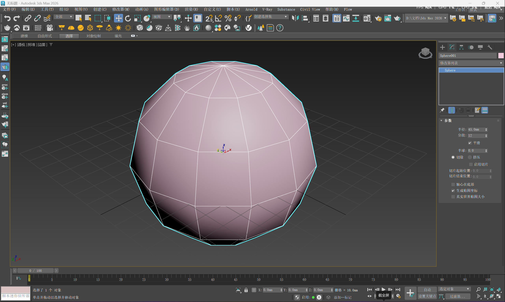
建球体 设半径和分段 边面
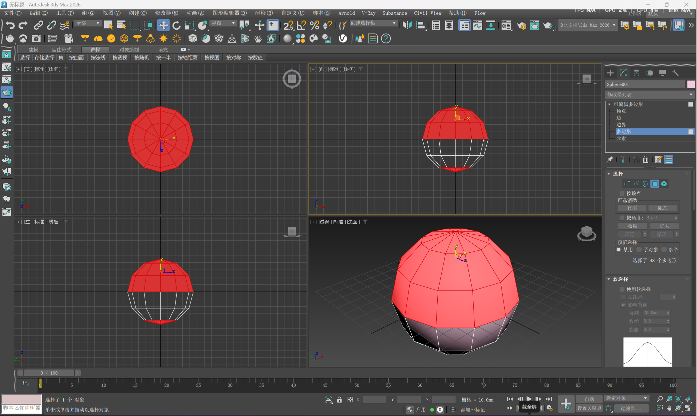
右键转换为可编辑多边形 选择多边形 在前视图 框选上面一半 Ctrl点选最下面 Del
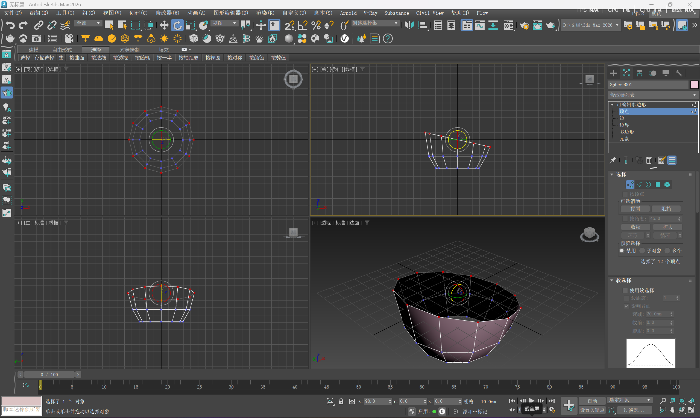
选择点 框选最下面的点 R 调整 框选最上面的点 E 在前视图调整→倾斜
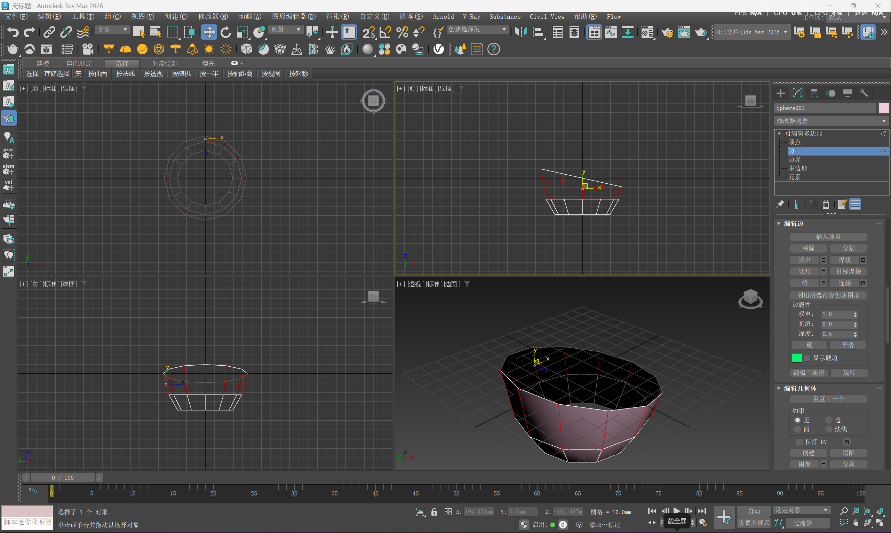
选择边 W 点上半部分的任一条竖线 环形 连接 R 调整 点下一行任一条横线 循环 R 调整（几条线调整，使之圆润）
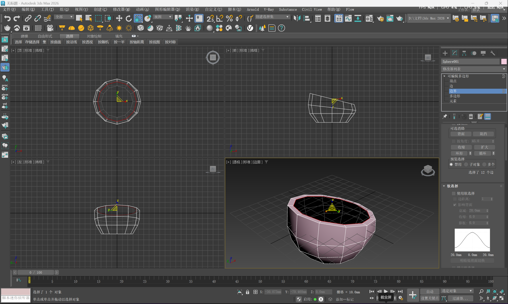
选择边界 框选上半部分 R Shift 中心→往里收缩
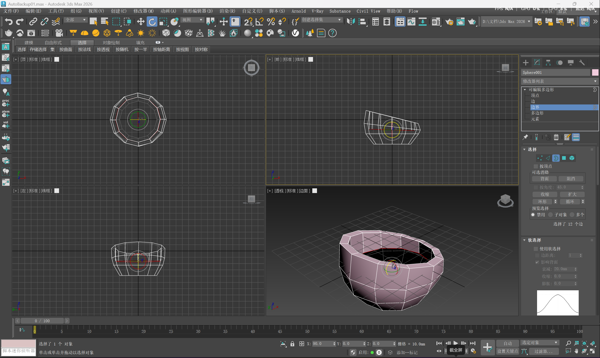
W Shift→平行往下拉 E 在前视图 调整为平
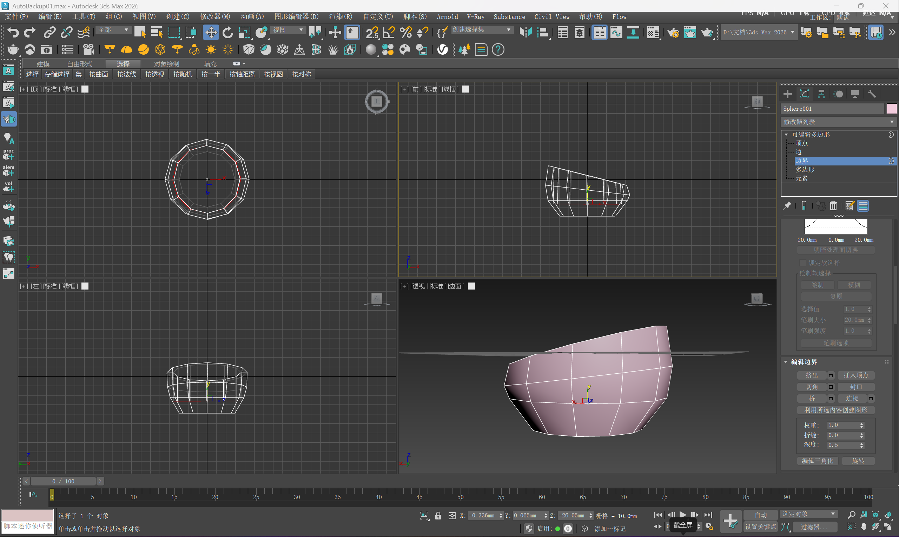
W Shift往下拉到不出轮廓 封口 框选下半部分 封口
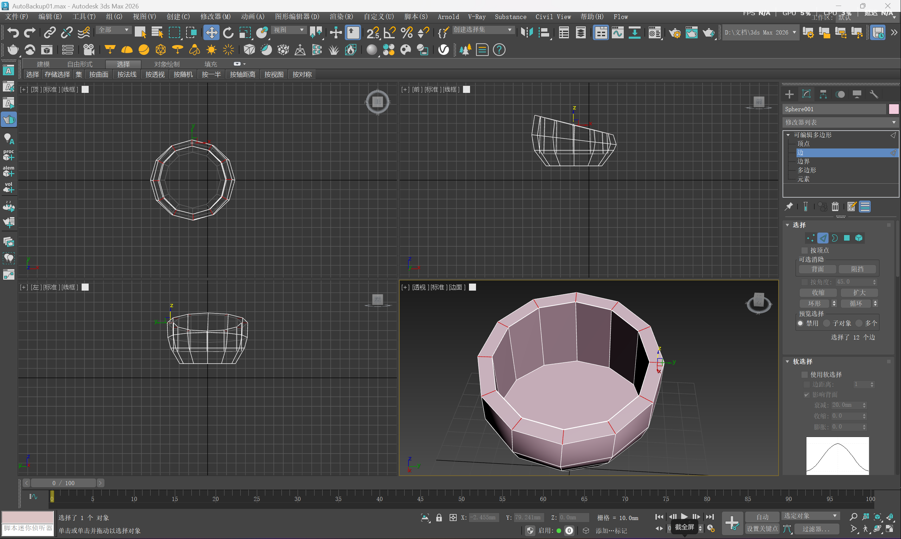
点最上面的任一条竖线 环形 连接
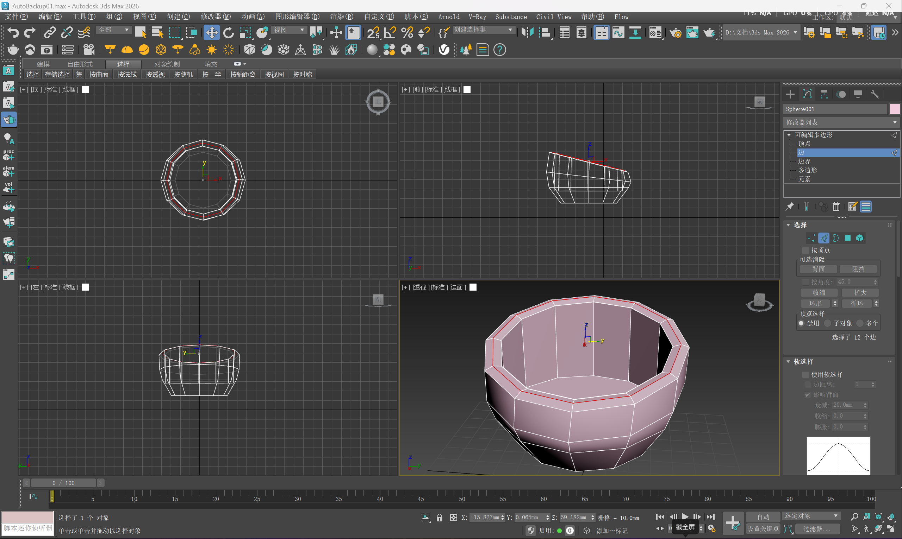
Z 往上拉一点
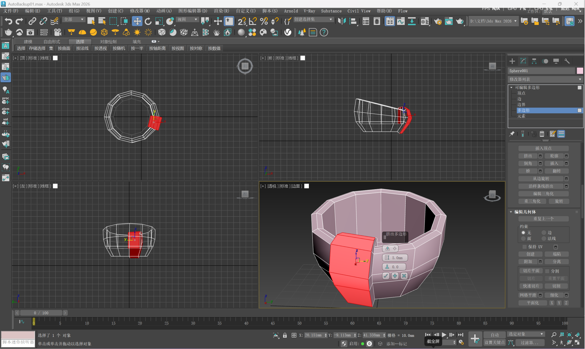
选择多边形 每一列Ctrl点选里面外面 挤出设置 局部法线
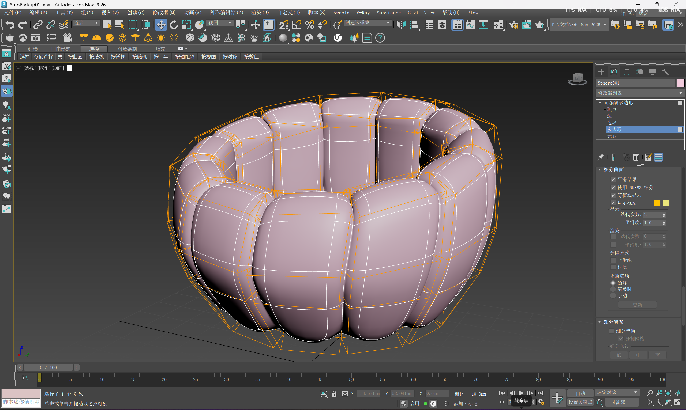
细分曲面 使用NURMS细分 迭代次数:2
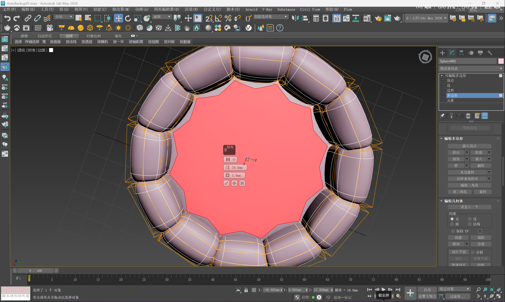
点中间 倒角设置
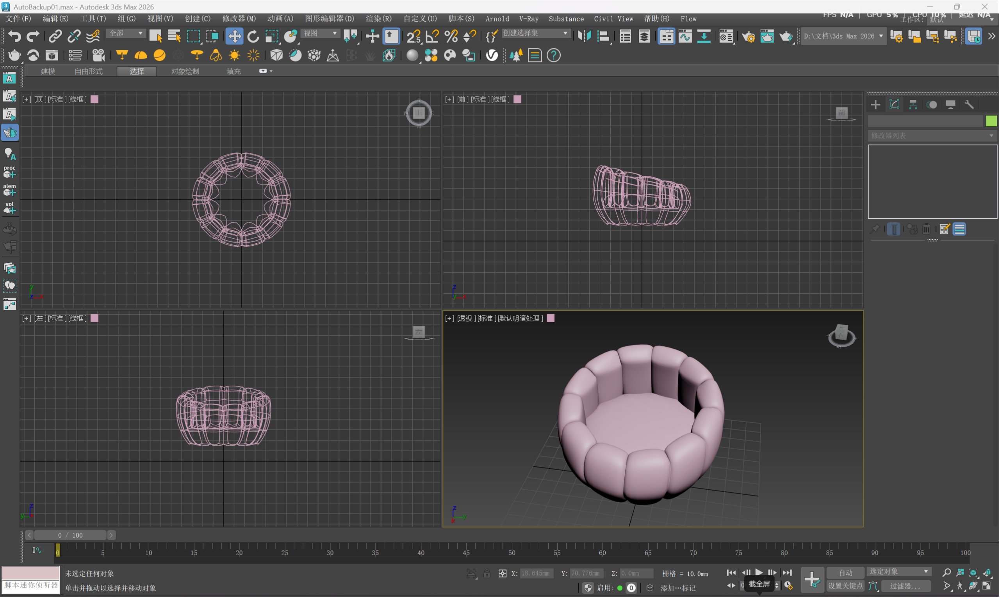
默认明暗处理